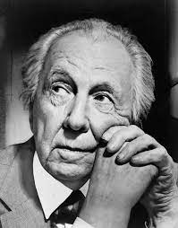
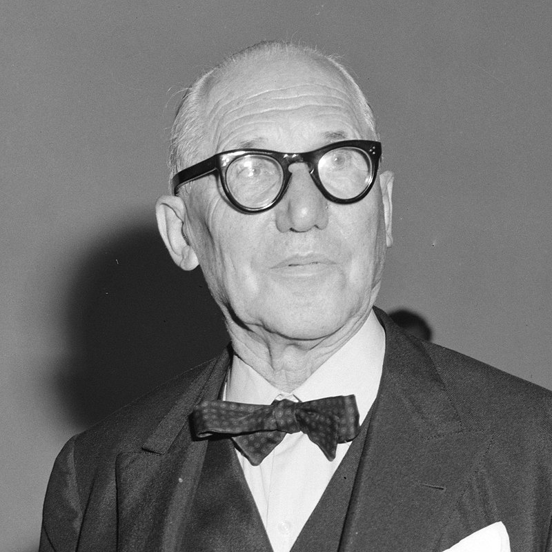
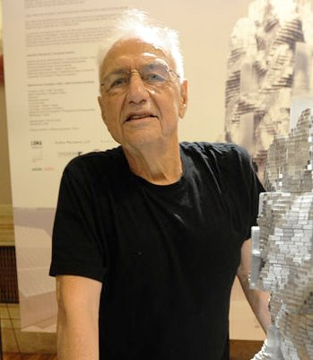

brArchitects
"We live in a world where the only constant is change, and in that world, architecture needs to adapt and respond to that change."
about
An architect is a professional who designs buildings and spaces. Their job involves not only creating aesthetically pleasing structures but also ensuring that these structures are functional, safe, and sustainable. Architects work closely with clients to understand their needs and preferences, providing design solutions that meet those requirements.An architect's role involves being engaged in every step of the design process, from concept development to final construction. They must have a strong understanding of architectural principles, building codes, and sustainability concepts. Architects need a combination of creativity, technical skills, and problem-solving abilities to create innovative and practical designs.

Frank lloyd Wright
Frank Lloyd Wright Sr. (June 8, 1867 – April 9, 1959) was an American architect, designer, writer, and educator. He designed more than 1,000 structures over a creative period of 70 years. Wright played a key role in the architectural movements of the twentieth century, influencing architects worldwide through his works and mentoring hundreds of apprentices in his Taliesin Fellowship.Wright believed in designing in harmony with humanity and the environment, a philosophy he called organic architecture.
learn more

Le Corbusier
Charles-Édouard Jeanneret (6 October 1887 – 27 August 1965), known as Le Corbusier was a Swiss-French architect, designer, painter, urban planner and writer, who was one of the pioneers of what is now regarded as modern architecture. He was born in Switzerland to French speaking Swiss parents, and acquired French nationality by naturalization on 19 September 1930.His career spanned five decades, in which he designed buildings in Europe, Japan, India, as well as North and South America. He considered that "the roots of modern architecture are to be found in Viollet-le-Duc".
learn more

Frank Gehry
Frank Owen Gehry CC FAIA (Goldberg; born February 28, 1929) is a Canadian-born American architect and designer. A number of his buildings, including his private residence in Santa Monica, California, have become world-renowned attractions.His works are considered among the most important of contemporary architecture in the 2010 World Architecture Survey, leading Vanity Fair to call him "the most important architect of our age".
learn more